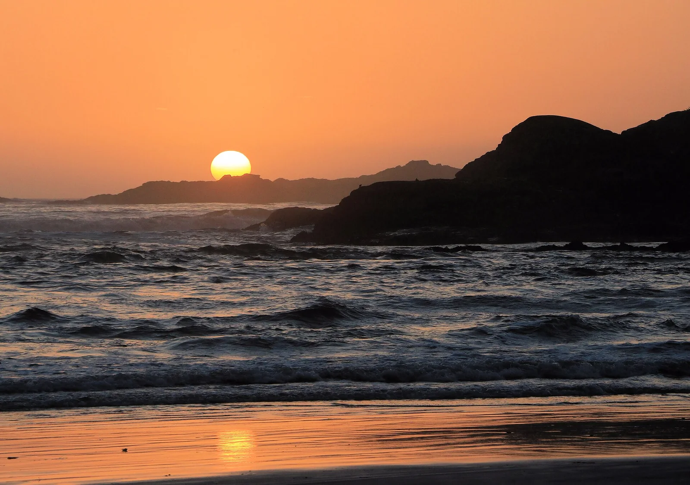

Tofino — Cox Bay
Colombie-Britannique, Canada · surf, bodyboard, kayak

Une plage de sable au pied de la forêt pluviale, ouverte à la houle du Pacifique nord. On y surfe toute l’année, en combinaison épaisse.
- Lieu
- Colombie-Britannique, Canada
- Niveau
- Intermédiaire
- Activités
- surf, bodyboard, kayak
- Type d'eau
- Mer / océan
- Coordonnées
- 49.12, -125.89 (position approximative du secteur)
Dangers à connaître
- Eau autour de 10°C : combinaison 5/4, cagoule, gants.
- Courants de retour marqués aux extrémités de la baie.
- Rochers et troncs flottants après les tempêtes.
Le conseil d'Ocean Buddy
Entre par le milieu de la plage : les bords creusent des courants de retour.
Ouvrir dans Ocean Buddy Télécharger sur l'App Store
Source : Description historique Ocean Buddy · vérification externe en attente.